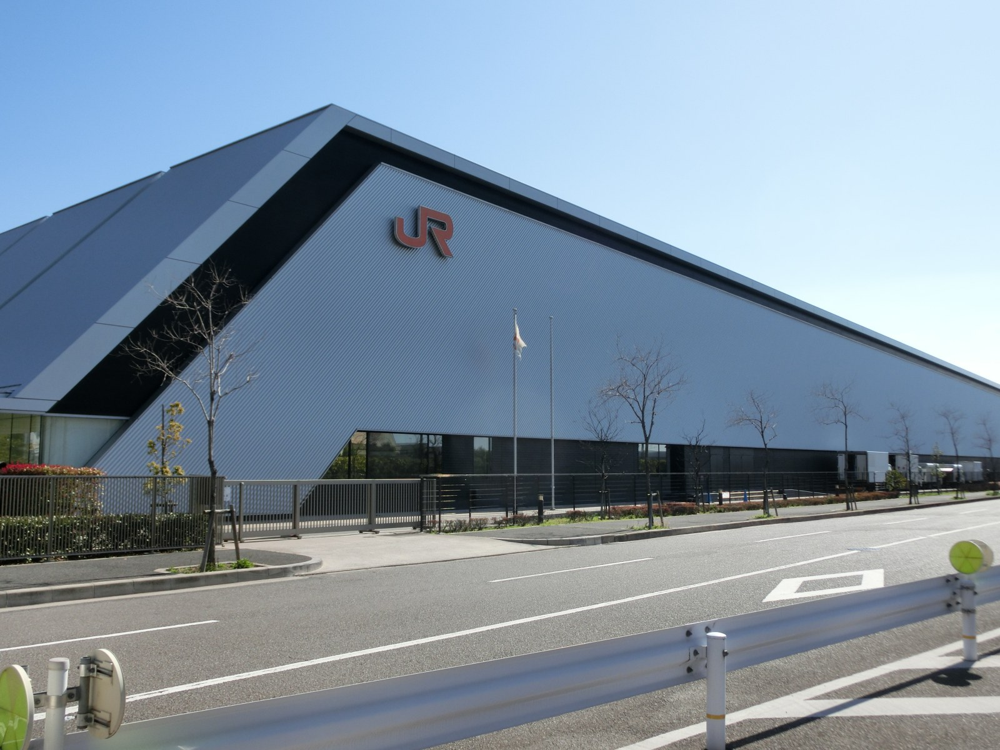
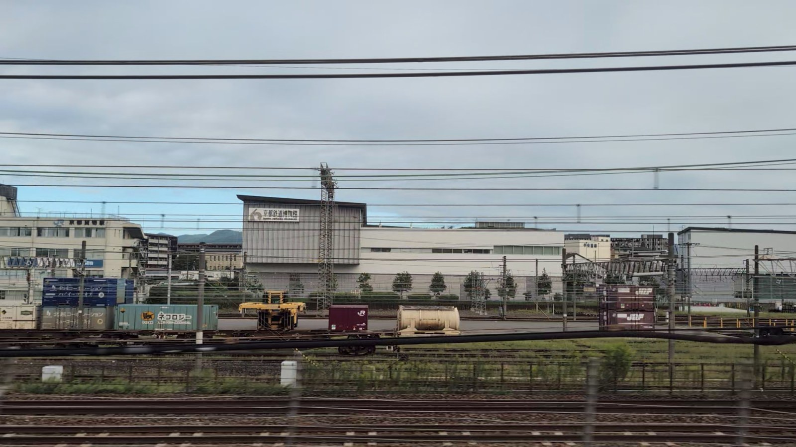

흰 차체에 푸른 띠. 도카이도 신칸센에서 볼 수 있는 열차가 거대한 로봇으로 변신한다면 어떨까요? 그런 상상을 이야기로 만든 작품이 신카리온(Shinkalion)입니다.
작품을 몰라도 여행길에 만난 신칸센에서 이야기를 시작할 수 있습니다. 실제 열차의 이름을 알고, 작품 속 모습을 살펴본 뒤 나고야와 교토의 철도 박물관으로 향해 보세요. 탈것과 이야기 사이로 잠시 샛길을 걸어봅니다.
01
늘 보던 신칸센이, 이야기의 주인공으로
철도를 좋아하는 소년들이 운전사가 되다
TV 애니메이션 제1기의 주인공 하야스기 하야토는 신칸센 운전사가 되기를 꿈꾸는 철도 애호가 소년입니다. 아이들은 거대한 적에 맞서기 위해 비밀 연구소가 개발한 신카리온을 조종합니다. 아이들이 운전사로 선발되고 연구소 어른들과 힘을 모아 사람들을 지킵니다.[10]
신칸센을 타는 즐거움과 열차에 대한 애정이 그대로 영웅 이야기로 이어지는 점이 이 작품의 매력입니다. 도호쿠로 향하는 초록색 E5, 도카이도를 달리는 흰색과 파란색의 N700A. 노선마다 다른 신칸센을 알아가는 일이 등장 로봇을 알아가는 즐거움으로도 이어집니다.

신카리온에 등장하는 것은 실제 신칸센을 바탕으로 한 변신 로봇입니다. TV 애니메이션 제1기 『新幹線変形ロボ シンカリオン』에서는 기요스 류지가 「シンカリオン N700Aのぞみ」를 조종합니다. 사진 속 N700A도 작품과 이어지는 차종입니다.[1]
첫머리의 특별 PV는 N700S의 등장을 기념해 2020년에 공개된 영상입니다.[9] 별개의 작품 『シンカリオン チェンジ ザ ワールド』에는 「シンカリオン N700Sのぞみ」가 등장합니다. 이 기체는 N700S 선두 차량이 변신한 모습입니다. 이름 끝의 A와 S 차이가 이야기로 들어가는 실마리가 됩니다.[2]
콘센트까지 로봇의 힘이 되다
N700S의 S는 최고를 뜻하는 「Supreme」에서 왔습니다. 도입부 PV의 기체 이름인 「スプリームモード」에서도 실제 열차와의 연결고리를 엿볼 수 있습니다.[9]
이야기는 이름과 외관에서 그치지 않습니다. 실제 N700S가 갖춘 자주 주행용 배터리와 모든 좌석의 모바일 기기용 콘센트도 2020년 영상 속 기체와 완구 설정에 반영됐습니다. 배터리는 전투를 돕는 「スプリームドラゴン」으로, 콘센트는 필살기로 이어지는 플러그로 표현됩니다. 여행을 편하게 하고 안전을 뒷받침하는 현실의 기술이 이야기에서는 로봇의 힘으로 변신합니다.[9]
같은 ‘노조미’라도 차종은 여러 가지
‘노조미’는 열차 이름이고 N700A와 N700S는 차량 종류입니다. 타고 있는 열차가 ‘노조미’라고 해서 반드시 N700S인 것은 아닙니다. 다음에 역에서 신칸센을 볼 때는 차체의 로고도 살펴보세요.[3]
02
트랜스포머에도 신칸센이 있다
탈것이 로봇으로 변신한다는 말을 듣고 트랜스포머를 떠올리는 분도 있겠지요. 트랜스포머와 신카리온은 별개의 작품이지만 두 작품의 완구는 모두 다카라토미가 만들었습니다.[4]
트랜스포머에는 도카이도 신칸센 0계에서 변신하는 「トレインボットショウキ」도 등장합니다. 다카라토미 공식 상품 소개에서 둥근 코의 0계 모습과 로봇 모습을 비교해 볼 수 있습니다.[5]
쇼우키는 TV 애니메이션 『トランスフォーマー ザ・ヘッドマスターズ』에서 활약하는 열차 변신 로봇, 트레인봇의 일원입니다. MPG 완구에서는 0계에서 로봇으로 변신한 다음 다른 다섯 몸체와 합체해 거대한 「ライデン」을 이룹니다. 쇼우키는 그 가슴 부분을 맡습니다. 한 차량이 변신과 합체를 거쳐 서로 다른 모습을 보여주는 구조입니다.[5]
신칸센이 로봇으로 변신한다는 발상은 트랜스포머와 신카리온 모두에 있습니다. 같은 열차라도 작품에 따라 로봇의 모습과 이야기 속 역할은 달라집니다. 두 작품을 나란히 보면 일본 철도가 창작의 소재로 사랑받아 온 것도 알 수 있습니다.
변신하는 탈것을 좋아한다면 일본 철도에서 즐길 거리가 하나 더 늘어납니다. 로봇이 되기 전 모습이 실제로 사람들을 태우고 달려온 신칸센이니까요.
03
나고야의 박물관에서 비밀 기지를 상상하다



TV 애니메이션 제1기에서는 리니어·철도관 지하에 신칸센 초진화 연구소 나고야 지부가 있다는 설정입니다. 「シンカリオン N700Aのぞみ」 등이 소속된 이야기의 거점이기도 합니다.[1]
물론 지하 비밀 기지는 허구입니다. 실제 리니어·철도관에서는 0계, 100계, 300계, 700계 등 역대 신칸센을 가까이에서 볼 수 있습니다. 선두 모양을 비교하는 것만으로도 지금 타고 있는 신칸센에 이르기까지의 시간이 느껴집니다.[6]
이야기 속에도 지역과의 연결이 있습니다. 나고야 지부의 N700A를 조종하는 기요스 류지는 아이치현 출신 중학생이며, 교토에서 하야토의 아버지 호쿠토에게 지도를 받은 운전사입니다. 가라테 경험도 로봇 전투에 살립니다. 나고야와 교토는 배경에 지명이 나오는 데 그치지 않고 사람들이 오가며 기술을 이어가는 장소이기도 합니다.[10]
현실의 박물관을 이야기 속 거점으로 고른 데에는 이유도 있습니다. 제1기와 제2기 제작진의 공식 토크에서는 현실과 연결되어 있다고 느끼도록 철도 박물관 지하를 기지로 설정했다고 설명합니다.[7]
- 내려서 방문하기
- 나고야역에서 아오나미선을 타고 긴조후토역으로 가세요. 역에서 도보 약 2분입니다. 신칸센 차창으로 보는 곳이 아니라 나고야에서 내려 찾아가는 샛길입니다. 공식 교통 안내
04
교토에서는 창밖에 박물관이 보인다


교토역 서쪽에서는 신칸센 창문으로 교토 철도 박물관 외관이 보일 때도 있습니다. 전차선과 화물열차 너머로 박물관 이름이 눈에 들어옵니다.
이 박물관도 TV 애니메이션 제1기에서 지하에 연구소 교토 지부가 있다는 설정으로 등장합니다. JR 서일본도 2019년 협업 행사 안내에서 그 설정을 소개했습니다.[8]
관내에는 0계 신칸센 1호차와 500계 등 실제 신칸센도 전시되어 있습니다. 쇼우키의 바탕이 된 0계를 실제 차량으로 확인하고 길게 뻗은 선두가 특징인 500계와 비교할 수 있습니다. 애니메이션과 완구에서 본 신칸센의 형태가 된 실물로. 두 작품에서 시작된 관심이 같은 철도 역사로 이어집니다.[11]
창밖으로 잠깐 바라보는 날도, 교토에서 내려 찾아가는 날도 있습니다. 이야기의 거점이었다는 걸 알면 선로 너머의 건물이 조금 더 눈에 들어옵니다.
- 내려서 방문하기
- 교토역에서 사가노선을 타고 우메코지교토니시역으로 가세요. 역에서 도보 약 2분입니다. 차창에서는 외관만 보이며 전시를 보려면 박물관에 입장해야 합니다. 공식 교통 안내
사진은 촬영일 당시의 모습입니다. 앞서 달리는 열차나 날씨 등에 따라 똑같이 보이지 않을 수 있습니다. 개관일과 현재 전시는 각 박물관 공식 사이트에서 확인해 주세요.
05
다음에 만날 신칸센이 조금 다르게 보인다
작품을 전부 보고 여행을 떠나지 않아도 괜찮습니다. 역에서 N700A 로고를 찾아보거나 N700S의 애니메이션 속 모습을 살펴보세요. 박물관에서 0계의 둥근 코와 현재 차량을 비교해도 좋습니다.
늘 보던 신칸센에도 아직 몰랐던 이야기가 있습니다. 그 작은 발견을 다음 여행의 동행으로 삼아 보세요.
출처와 사진 안내
- 제1기 공식 용어집: N700A, 나고야 지부, 교토 지부 설정.
- 『チェンジ ザ ワールド』 N700S 노조미 공식 소개.
- JR 도카이 「도카이도 신칸센—끊임없는 서비스 개선」: N700A 타입과 N700S. 실제 차량 전시.
- 다카라토미 사사·상품사: 트랜스포머와 신카리온.
- 다카라토미 「MPG-01 트레인봇 쇼우키」: 도카이도 신칸센 0계에서 변신.
- 리니어·철도관 ‘관내 볼거리’.
- 공식 제작진 토크쇼 ‘초진화 연구소의 비밀 이야기’(2026년 2월 14일 게시). 제3기 사이트에 게시됐지만 여기서 인용한 발언은 제1·2기 제작진의 것입니다.
- JR 서일본 「신카리온×교토 철도 박물관 2019」(2019년 7월 5일 발표): 제1기 극중 설정. 과거 행사의 기록이며 현재 개최 안내가 아닙니다.
- 다카라토미 공식 발표(2020년 10월 30일·PDF): N700S 노조미 오리지널 애니메이션 공개와 지정 영상 URL.
- 제1기 공식 소개, 공식 캐릭터 소개: 하야토, 아이들과 연구소의 역할, 류지와 나고야·교토의 관계.
- JR 서일본·교토 철도 박물관 소개: 0계 1호차, 500계 등의 소장·전시.
신칸센과 교토 철도 박물관 사진은 michikusa가 직접 촬영했습니다. 리니어·철도관 사진은 촬영자가 퍼블릭 도메인으로 제공한 사진입니다. 애니메이션 장면이나 캐릭터 이미지는 전재하지 않았으며 작품 공식 채널이 안내하는 YouTube 영상 링크와 플레이어를 사용했습니다.